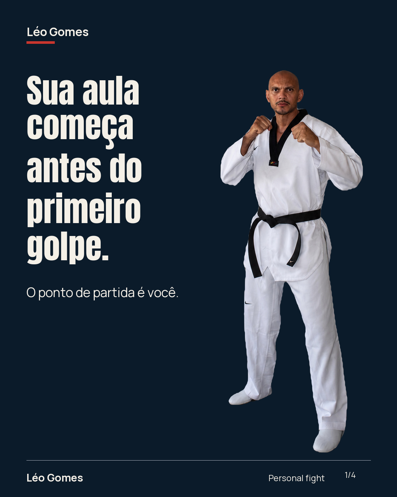
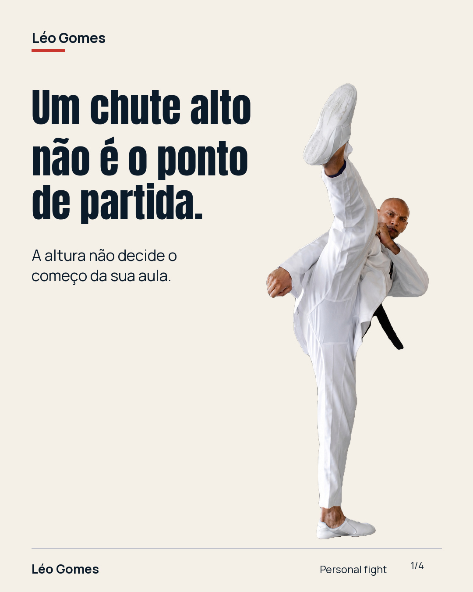
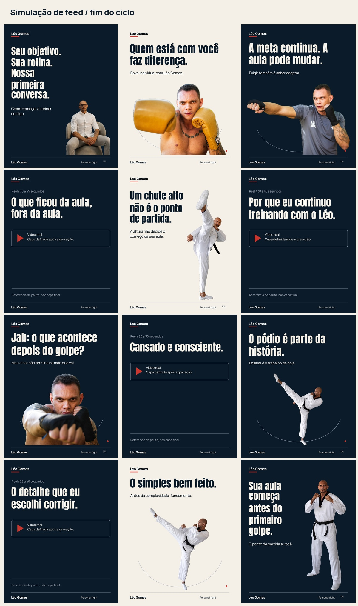

07–13 outubro
Entender a escolha.
Escuta, fundamento, uma decisão real e trajetória traduzida para a aula.
Outubro de 2026 07 a 31
A decisão do professor.
A experiência do aluno.
O motivo da escolha.
Versão 2 · Material para aprovação.
Sem agendamento ou publicação automática.


Fotos reais. Identidade própria.Direção do mês
Na comunicação de ofertas locais, personalização e exclusividade já aparecem como promessas. Para o Léo, a diferença precisa ganhar uma cena: o que ele percebe, por que escolhe uma orientação e como acompanha a resposta.
O mês conecta Técnica de Campeão, Mente de Campeão e Experiência Individual Premium. Conteúdo educativo entra para revelar o critério do professor; a trajetória explica de onde vem seu repertório; o aluno conta o valor que encontrou.
Revisão de fontes públicas em 06/10/2026. Não foram medidos faturamento, crescimento ou conversão dos concorrentes. As aplicações para o público de alta renda são hipóteses a testar, não garantias.
07–13 outubro
Escuta, fundamento, uma decisão real e trajetória traduzida para a aula.
15–24 outubro
Desafio acompanhado, educação com critério e relatos de adultos.
27–31 outubro
Retorno à história, quando houver registro, e uma conversa que considera objetivo, região e agenda.
Publicações propostas
Abra uma peça para ver todas as telas, a legenda, o motivo da pauta, o que falta produzir e a alternativa se houver impedimento.
6 carrosséis, 2 fotos editoriais e 4 Reels. Volume proposto para o ciclo, sujeito a aceite. Horário inicial: 19h30, a ajustar com os dados do perfil.
Carregando o calendário…
Ordem reversa, como no perfil ao final do mês. Os quadros de Reels são referências de pauta, não capas finais. Elas serão escolhidas após as gravações.

Execução e acompanhamento
Collabs podem enriquecer o mês. Não ocupam uma data obrigatória sem confirmação e material entregue.
As quatro reservas já têm telas diagramadas. Pedir aprovação do kit até 08/10, antes dos cortes. Sem aprovação, registrar o impedimento e combinar a decisão; não deixar a data passar em silêncio.
Reservas nunca são tratadas como depoimento ou resultado de um aluno.
Janelas propostas de envio: 08, 11, 15 e 19/10. Registrar execução, orientação e resposta, com áudio real e autorização. A última aula pode retomar a primeira prioridade, se isso fizer sentido para o aluno.
Léo indica os alunos e envia os registros. Felipe acompanha os insumos, seleciona, edita, pede aprovação, publica e registra o link.
Revisão da fila às segundas e quintas. Atualizações em 09, 16, 23 e 30/10: links do que saiu, pendências, substituições e próximos passos.
Aprovação não se presume. Sem resposta ou insumo, registrar o impedimento e a decisão antes da data prevista.
Aluno adulto em 20/10 e aluna adulta em 24/10. Pedir uma experiência e uma situação concreta. O relato determina o gancho — não o contrário.
Sem promessa de cura, perda de peso ou transformação universal. A foto de exemplo não vira uma capa falsa de depoimento.
Feedback privado e autorização de publicação são separados. Enviar vídeo não equivale a consentir seu uso. Felipe criará o formulário; nenhum formulário foi criado por esta página.
O resultado que importa
Não basta aumentar alcance. Precisamos entender se as pessoas reconhecem a condução do Léo e se novas conversas têm encaixe com o acompanhamento.
Alta renda não se confirma por aparência ou profissão. Não há promessa de demanda AA ou aumento de ticket neste material.
Data e link do publicado. Arte aprovada que não saiu ainda não cumpre a entrega.
Objetivo informado, região e horários viáveis. Registrar o conteúdo citado, se a pessoa souber identificar.
Condição realmente apresentada, decisão e motivo de não avanço. Não atribuir todo resultado ao Instagram.
Menções espontâneas a leitura, adaptação, exigência ou situação de aula, junto com dados das conversas.
Leituras comerciais em 20/10 e 03/11. Coletar a base anterior se os dados forem disponibilizados. Teste de ticket maior exige condição definida pelo Léo, proposta real e acompanhamento da resposta. Amostras pequenas geram hipóteses, não prova causal.
As artes são propostas editoriais. Conteúdo técnico, agenda e condições devem ser validados pelo Léo antes da publicação.
Base estratégica: Plano Diretor, Complemento de entrevistas e Plano de Criação com revisão do filme, fornecidos pelo cliente. Frases atribuídas ao Léo vêm dessa base. Outros textos são propostas editoriais para validação.